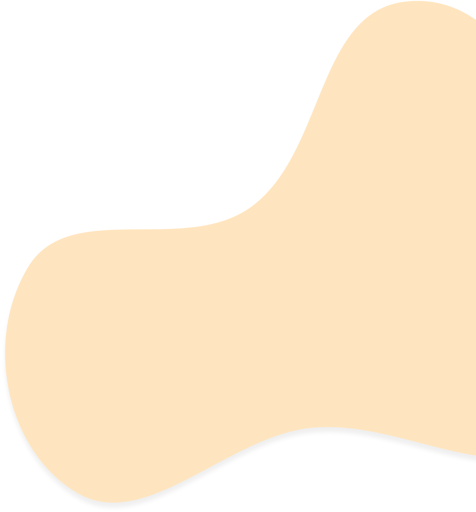
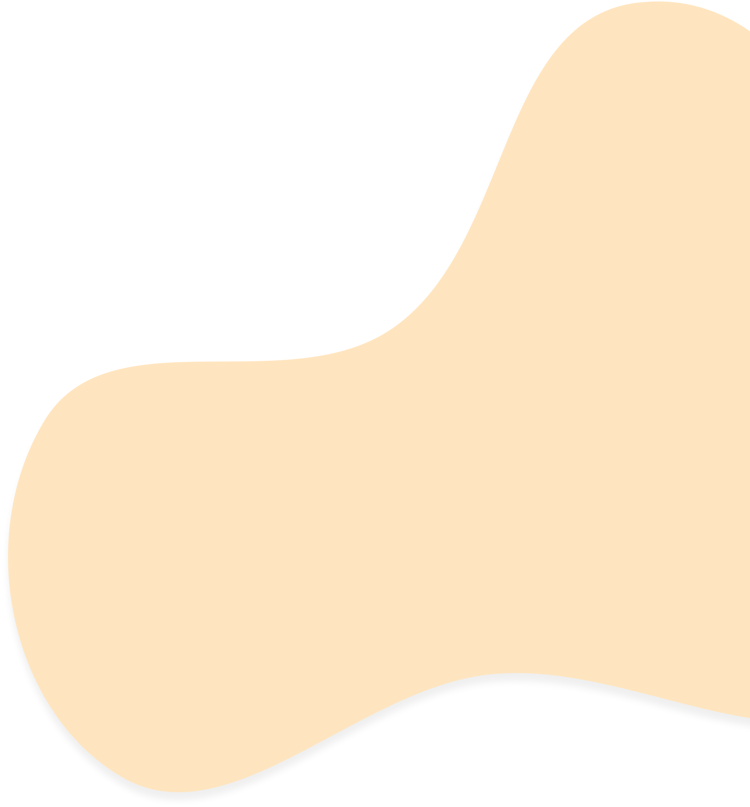

Que tal utilizar jogos e experiências
gamificadas para expandir o processo
de ensino-aprendizagem em um
modelo educacional mais colaborativo?

Sobre a Cordel

Atuação
Trabalhamos com práticas e ferramentas (digitais ou analógicas) baseadas em jogos e gamificação; Além de workshops e cursos para a capacitação de educadores.
Origem
Fundada em Novembro de 2019, por um grupo de alunos no ensino médio, motivados pelo desejo de melhorar a educação, unindo-a com a tecnologia e os jogos.
Missão
Transformar os cenários de aprendizagem por meio da união da educação com a tecnologia.
 

Aparições
Depoimentos

Marcos Primo
professor UFPE
Quando os alunos começam a participar do jogo, eles começam a competir divididos em grupos. Vou lançando demandas aleatórias e eles verificam os custos resultantes das decisões de produção e subcontratação. Vemos estilos agressivos, conservadores e aspectos de liderança, às vezes o clima esquenta dentro de um grupo. Ao final, explico que têm estratégias boas e não tão boas, mas grande parte dos resultados vem da sorte. Ao final eles estão aliviados e se surpreendem de ter passado 1hora e meia de aula e eles nem perceberam.
Micheline Souza
gestora de escola pública em Recife
Os adolescentes utilizam os jogos para se divertir, seria interessante mostrar a eles que também podem gerar uma aprendizagem pedagógica. E os professores podem utilizar esse recurso para que suas aulas fiquem mais criativas, interessantes e antenadas com as novas tecnologias. E acredito ser uma maneira de despertar no jovem o interesse pelo conhecimento facilitando assim esse momento de aulas híbridas. Que é muito difícil.
Tatiane Magali
professora de inglês em Recife
Seu projeto levando para o aluno interagindo o jogo com o aprendizado; conhecimento no qual despertou e muito a atenção do aluno e fez com que esse aluno tomasse o gosto pelo aprendizado. A curiosidade, desejo era muito pelos alunos e a participação foi espetacular. Tempo de pandemia, aula online pensávamos que não daria certo, mas deu e muito produtivo! Se o problema de todos, ou seja, a escola era o celular, agora passa a ser um veículo para aprendizado de forma correta com aplicativos e jogos da Cordel despertou o desejo de aprender com seu projeto! Orgulho de mais.
Fale conosco